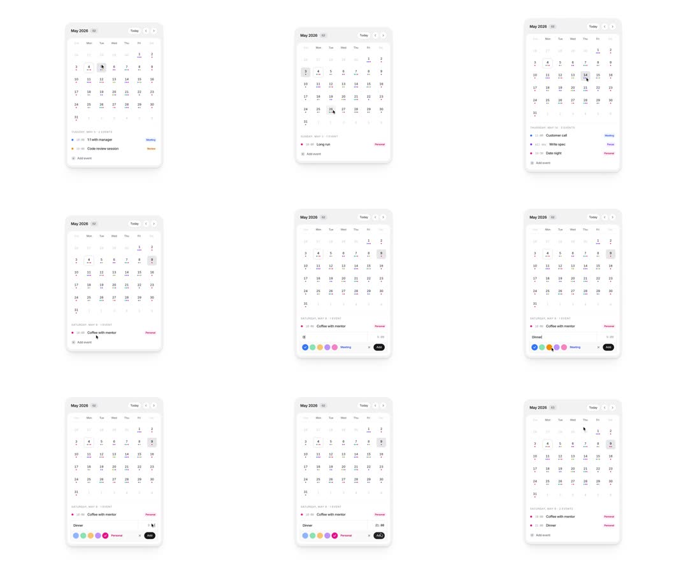

Mini calendar widget: month grid with per-day event dots, day selection with soft highlight, an events list below, and an inline quick-add composer (time field, color dots, tag pill, Add button) that appends events in place.
Media
Frame-by-frame

0-15%
Card: 'May 2026' header with Today + month arrows; weekday row; day grid with colored event dots under dates; events list below (1:1 with manager / Meeting, Code review session / Review) with time + tag pill; 'Add event' ghost row.
15-35%
Pointer selects different days: hovered day gets a light wash, selected day gets a solid grey rounded square; the events list swaps content with a short fade/slide to that day's events.
35-60%
'Add event' tapped: an inline composer expands in the list - text input, time at right, a row of 6 color dots and a tag pill ('Meeting'), black 'Add' button.
60-85%
User types 'Dinner', picks a color (dot gets ring), switches tag to 'Personal', taps Add.
85-100%
Composer collapses; the new event appears in the list with its color dot and a matching dot materializes under the day number in the grid.
Build prompt
Rebuild this interaction 1:1: a mini calendar widget - month grid with per-day event dots, day selection with soft highlight, events list below, and an inline quick-add composer (text input, time field, color dots, tag pill, Add button) that appends events in place.
## Integration
Integration: stack-agnostic spec - springs given as stiffness/damping, timed motions as duration + curve, canvas/shader notes are perf guidance only; map every value to your framework and animation library of choice.
## Scene
White card: "May 2026" header with Today button + month arrows; weekday row; day grid with colored event dots under dates. Below: events list ("1:1 with manager / Meeting", "Code review session / Review") with time + tag pill; a ghost "Add event" row at the end.
## Motion spec
Pattern: selection + inline composer.
- Day hover: light wash background (instant). Day select: solid grey rounded square, 150ms ease-out; the events list swaps content with a short fade+slide (200ms, y 4 -> 0).
- Add event tapped: composer expands in the list (height 0 -> auto, 300ms spring) - text input, time at right, row of 6 color dots, tag pill ("Meeting"), black Add button.
- Color pick: chosen dot gets a ring (150ms). Tag switches pill text instantly.
- Commit: composer collapses (250ms); the new event appears in the list (fade+rise 200ms) and a matching dot pops under the day number in the grid (scale 0 -> 1, 150ms spring).
## Calibration
- List swap 200ms; composer spring 300ms; dot pop 150ms - everything in the 150-300ms micro band.
- The new grid dot materializing is the payoff - keep the pop springy (stiffness ~400).
- Selection is a filled rounded square, not a ring; hover is a wash, not a border.
## Reduced motion
All transitions become 150ms opacity fades; composer appears/disappears without height animation.
## Don't miss
- The composer lives inline in the events list - not a modal, not a popover.
- Event color propagates to both the list row and the grid dot.
- The ghost "Add event" row is always the last list row, quiet styling (zinc-400, dashed or plain).
Mechanics
trigger
day click; Add event expands composer; color/tag pick; Add commits
elements
month grid, day cells with dot tray, events list, quick-add composer
properties
day hover/selected backgrounds, list content crossfade, composer height, color dot ring, new-dot pop in grid
timing
list swap 200ms; composer expand 300ms spring; dot pop 150ms